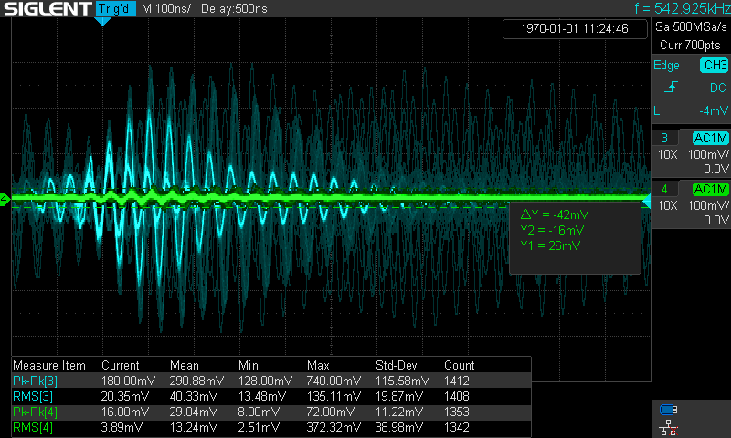

RIGOL DHO924Sを骨の髄まで叩く - 2025.11.25
まず，今回の記事はRIGOL DHO924Sをこれでもかというほど叩きまくります．
大学からお借りしているものなので少し気が引けますが，あまりこの製品に苦しんで欲しくないので僕の感想を書き残しておくことにします．
まず，DHO924Sはちょっと高機能なエントリー機のような位置付けの製品です．
12bitの分解能を持つADCを搭載していて，USB C電源で動作する，持ち運び性は最強のオシロです．
ただ，使っているだけでストレスが溜まるこのオシロに関してはちょっと頂けないところが多すぎたので徹底的に叩き尽くしていきます．
最後にも書いていますがこの記事はあまりに長いので結論だけ書いておきます．
実際に触らずに買うな
これだけは言っておきます．
せめて店でデモ機を触って納得してから買ってください，ただし私は勧めません．
スペック
DHO924Sのスペックを軽く紹介しておきます．
DHO800/900シリーズの最上位機種なので，他の機種では微妙にスペックが違っている点はご注意ください．
- 帯域幅 : 250 MHz
- サンプリングレート : 1.25 GSa/s
- メモリ長 : 50 Mpts
- チャネル数 : 4
- 垂直分解能 : 12bit
- ディスプレイ : 7'(1024×600 px) デュアルタッチ液晶
これ以降，基本的にこの製品を叩きます．
この製品のファンの方には申し訳ないです．
ファンの方にはブラウザバックを強く推奨しておきます．
1.システムが不安定
まず触れなければいけないのはシステムの不安定さでしょう．
一応，最新のファームウェアで動作させていますが，なかなかに不安定です．
最も顕著だったのはXYモードを起動した時です．
このオシロはAndroidアプリとして動作しているのですが，そのシステムが丸ごと落ちます．
具体的には以下のエラーが表示されます．
RIGOL.scope has stopped
これはAndroidでソフトウェアがクラッシュして強制終了された場合に表示されるダイアログです．
ここでダイアログのオプションからオシロを再起動できますが，何をやってもこの問題は解決しませんでした．
2.卑怯な垂直軸の制限
有名な話ですが，このオシロは垂直感度の最高設定，200 uV/div(倍率x1)に設定すると，強制的に20 MHzの帯域制限がかかります．
垂直感度の設定を高くするときの目的は微小で，特に高調波を見るときの多いと思いますが，そこで帯域幅に制限をするのは非常にナンセンスです．
この帯域幅の制限をかけないとノイズレベルの劣悪さが目立つのか，と予想してしまいます．
つまり純粋な測定ができる垂直感度は500 uV/divまでです．
卑怯というかすごく不便です．
3.操作感が掴めない
やはり1番気になる点です．
操作感が全く掴めません．
チャネルの設定を開こうと思ってチャネルのキーを押すと平気でチャネルが無効になります．
画面上でチャネルのところを押さないとチャネル設定は開けません．
つまり，タッチが前提の操作体系になっています．
そして問題はそのタッチ操作もやたらと複雑ということなのです．
指でタッチするには小さすぎるソフトキーがそこそこあります．
最も顕著な例はMath機能のところです．
チャネル設定のソフトキーも既に大きくはないのに，Math 1~4のソフトキーは驚異の1/6サイズです．
ウィンドウ操作もなんだか微妙です．
Display設定を開くためにはウィンドウの右上の≡マークを押さないといけません．
これがなかなかに小さいです．
隣にあるウィンドウ移動ボタンを押す事故がやたら多発します．
ここだけは素直に，オブラートに包まずに言いますが，操作性がマジでクソ．
私がここまでレビューで言うなんて稀ですよ．
最も重要な点なのでしっかり述べておきますが．
やはり困るのはハードキーとして出ているべきキーがハードキーになっていない点が困ります．
エッジトリガのスロープ(立ち上がり/立ち下がり/両方)の設定を表に出すくらいなら，トリガモード(AUTO/NORMAL/SINGLE)の設定キーが出ている方がよっぽど便利です．
ただ，この章に押し込みすぎると読みにくいので少しずつに分けて書いておきます．
4.感度が極端すぎる操作ノブ
感度が極端というのは，感度が良すぎる状況と悪すぎる状況があるという意味です．
例えば垂直/水平移動のノブが感度が良すぎる例です．
物理ノブを回す際には，「これくらい回したんだから，これくらい動くだろう」という体感があると思います．
例えば水平位置のノブをつまんでクイっと1/3回転から1/2回転ほどさせたら，トリガポジションが2~3 divほど移動することを予想します．
少なくとも画面内にトリガポジションが存在すると予想するはずです．
ですがこのオシロの場合は平気で画面外まで吹っ飛ばしていきます．
垂直位置も然りです．
逆に多目的ノブで数値を変更するとき，全然数字が変わりません．
タッチで数字を入力しないとまともに使えませんね．
直感性もクソもありません．
5.ノイズまみれの電源
このオシロはUSB PDを電源としています．
消費電力は45 Wと全く持って電力ドカ食い部ではありませんが，ノイズ撒き散らし部ではあります．
私の環境，なかなかに終わっていてデスクライトにGNDを短絡させたプローブ(近磁界プローブのようなもの)を近付けると40 mVPKPKほどノイズが観測されます．
まぁまともに計測をする環境ではありませんが，このRIGOLの電源(公式)は50 mVPKPK強が観測されました．
しかもノイズ源はデスクライトの時より離れているはずです．
まぁまぁ暴力的なノイズ性能なので正直あまり使いたくないですね．
おかげさまでSIGLENT機ではそこそこ観測できる微小信号がノイズに埋もれて観測できません．
6.扱いにくいアースコード
先ほども言ったように，USB Cを電源としています．
つまり，シェルグラウンドで面倒な接続をしていれば接地はなんとかなるかもしれませんが，公式電源でない場合に注意をしなければなりません．
そのために独立アースコードが用意されています．
本体側の端子は「少しかためだな」という程度で，アースを取る意味では十分な信頼性があると思います．
ただ，反対側に問題があります．
日本の3PコンセントのE端子(アース)に差し込んで使用するようなのですが，緩くて刺さりません．
接地を確実にするためにスプリングによる反発が効いている樹脂カバーが，E端子の保持力に対して強すぎます．
スプリングの弾性力で押し返されてすっぽ抜けます．
どうやらこのメーカーはアースを取らせる気がないようです．※あります
とりあえず，3P→2P変換アダプタの3P側にアースコードを接続して2P側のアースY端子をアースターミナルに接続して回避しましたが，正直のこの時点で超微妙です．
やはり3Pコンセントが正義です．
7.ハードキーの光量が足りない
通常，実験というのは安全のために明るい環境で行うと思います．
実際，私も(例のノイズまみれの)デスクライトを最大光量で使っていて，小さいながらも860 lmの光束が公称されています．
ただその光量の元では，ハードキーの発行が見にくいです．
ここでは対比としてSIGLENT SDS1204X-Eを挙げます．
SIGLENT機はボタン全体が光って，文字の印刷が影になります．
つまり，どの機能がONなのか，ひと目見て分かります．
逆にRIGOL機はボタンは光らずにその中の透明シリコンで型取られた文字だけが光ります．
以下に発光のイメージを載せておきます．
色の雰囲気を揃えるためにチャネル番号は変えてあります．
SIGLENT : 2
RIGOL : 3
仮に，これで中のLEDの光量が同じでもSIGLENTの方が見やすいことは予想できると思います．
8.謎に貧弱なズーム機能
ある程度の長さの波形を取り込みながら，ズーム機能を使って拡大することは多いと思います．
通常，ズーム機能では分解能をある程度は犠牲にして拡大します．
ただ，RIGOL機は思ったより拡大できない，というか変な動きをします．
どんどん拡大していって，最大まで拡大したとします．
このとき，10 ns/divには設定できない状況だったら，20 ns/divで頭打ちすると思うのですが，RIGOLは無理矢理拡大して12.8 ns/divの設定にしてきました．(細かい数字はズレているかも)
これじゃぁ体感で水平軸を読めないのでカーソル測定を起動しなきゃいけません．
しかもせっかく12bitの分解能があるのに垂直ズームはできません．
なんなら標準状態ではタッチ操作をしないとズーム機能を起動できません．
Utilityを開いて時間軸の設定ノブの押し込み動作を変更してやると1発で起動できるようになりますが．
9.なにか扱いにくいカーソル測定
扱いにくいというのはXカーソルとYカーソルの切り替えに関してです．
わざわざMeasure測定の表示エリアのCursor測定の項目にタッチして設定を開いてX/Yを切り替えてやらないと切り替えできません．
タッチ操作なら多少マシですが，Cursor測定の測定値はMeasure測定の表示エリアの下にスタックされていくので，スクロールが必要です．
別にダメじゃないけどなんか扱いが面倒だな，と感じました．
10.表示面積を食い尽くすウィンドウたち
これ，なにげに致命的です．
最近のオシロらしく，逐一ウィンドウを表示してくるタイプのUIです．
別にこのスタイルにとやかく口出しする気はありませんが，問題はウィンドウの大きさです．
やたらと余白が広くて，元から狭い波形表示エリアを全て食い尽くす勢いで画面を占領します．
ウィンドウの背景は透明度を調整できますが，そういう問題じゃないのです．
いくらウィンドウが透明だろうと波形が操作できるかと言われれば否．
しかも文字やスイッチがオーバーレイされているので波形を見るのに適しません．
ウィンドウを動かしてやることもできますが，なにせ余白が広いので波形がある程度見れる場所まで動かせば設定できる項目は1〜2行程度．
そしてMeasure測定とCursor測定の表示エリアにも難があります．
画面の右側1~1.5 div分ほどの波形表示エリアを消費して測定値のスタックエリアが表示されます．
ですが，表示項目の拡張ボタンや追加情報に気を取られすぎて一括で表示できる量が少ないです．
念のため画像も載せておきましょう．
SIGLENT

SIGLENT機の画面は非常にスッキリしたレイアウトですが，測定値の表示も同様です．
2種の測定を2チャネルに対して実行しているので合計4種類を表示しています．
多少文字は小さいものの，ほぼ波形表示エリアを侵食せずに画面下部でスタックされています．
統計値まで表示してここまで整っているのですから優秀です．
RIGOL

統計値なし，現在の値だけを表示して，4つが限界です．
5つめが表示できるかは怪しいです．
しかも統計値まで表示すると1個か2個が限界です．
レイアウト設定が下手としか言えません．
11.LXI仕様が残念
これは致命的な問題ではありませんが，今の時代にWi-Fiアダプタが使えないのは如何なものかと思います．
現に10年ほど(？)前のSIGLENT機はWi-Fiアダプタに対応していますからね．
RIGOL機はLANケーブルを刺さないとLXIサーバーは使えません．
微妙に不便です．
まぁここら辺は，USBマウスが使える点と相殺，くらいにしておきましょう．
12.システムスペックの限界
これは小型化の代償だとは思いますが，微妙にスペック不足を感じます．
1chだけを使ってる時はまぁ快適です．
ただ，Math機能を使ったりチャネル数を増やしたりすると，一気に動作が重くなります．
…いや，少し語弊がありますね，画面のフレームレートが一気に落ちてしまうような感覚です．
そして前述のノブ感度の極端さも相まって一瞬で設定値が吹っ飛んでいきます．
13.波形取り込みが遅い
そもそもカタログスペックの取り込みモードNormal時30,000 wfms/sというのもそもそも微妙ではありますが，それがさらに落ちているような感覚があります．
トリガーがかかっていない時，つまりトリガレベルが適切なレベルに設定されていないと，波形の取り込みレートが一気に落ちてしまいます．
少なくともそう感じます．
オシロスコープというのはサンプリングも表示も速いため，適当にプローブを突き当てれば波形が出ているのか，あるいは出ていないのかが分かるのも良い点でだと思います．
しかし，そういう時って大体，トリガはかかっていません．
画面内で波形が暴れているか暴れていないかで判断するのです．
ただしRIGOLは取り込みが遅くなってしまうので，その「暴れた波形」なるものが確認できません．
本当に良くないですね．
14.フォスファ機能がない
製品そのものの問題ではないですが，フォスファ機能(フォスファ : Phospher，蛍光体)がないのはちょっと微妙だなぁと感じます．
フォスファ機能というのはブラウン管オシロの様に微妙に蛍光が残る現象を模擬する機能です．
ですから，波形が多く通る部分は濃く，そうでない部分は薄く表示されます．
残光機能(Persist，Afterglowなどと表記されることが多い)とは別物で，フォスファ機能の方が扱いやすさは上ですね．
残光機能はこの機種にもありますが，フォスファはありません．
ノイズ波形とか微小信号の見易さが段違いなのでフォスファ機能はあった方が幸せになれます．
ちなみに，DPO(Digital Phospher Oscilloscope|デジタル・フォスファ・オシロスコープ)は天下のTektronixの商標なのでご注意ください．
商標の問題があるので，他のメーカーはSPO(Super Phospher Oscilloscope)やUPO(Ultra Phospher Oscilloscope)などと称しています．
いろいろと書いてきましたが，要約すると少なくともDHO800/900は買うなということです．
素直に言って，もし僕がDHO814(※自分のお金で買える限界)なんかを買っていたら多分Makerの世界には帰ってこなかったし，その研究もしなかったでしょう．
本当に，買わないことを強く勧めておきます．
というよりかは，ちゃんとデモ機が置いてある店で触って，納得してから買うことを強く勧めておきます．
YouTube上に蔓延るレビュー動画を鵜呑みにして買うのだけは絶対にやめてください．
少なくともここにはこのシリーズ自体がダメだと感じている人間がいるわけですから．
←メインページに戻る
Web閲覧にあたって
このWebサイトはCookieと
Google Analyticsを使用しています。
閲覧を続行するには同意してください。
この表示は90日後に再び現れます。